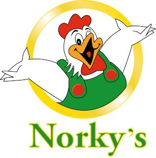
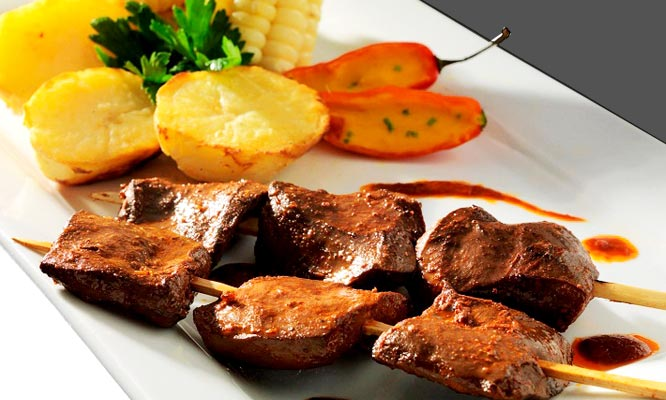
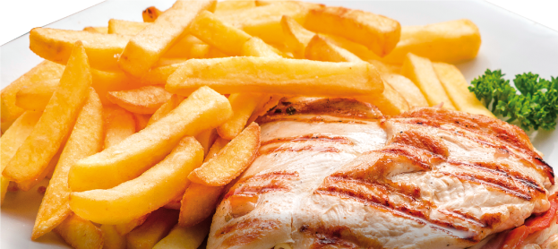
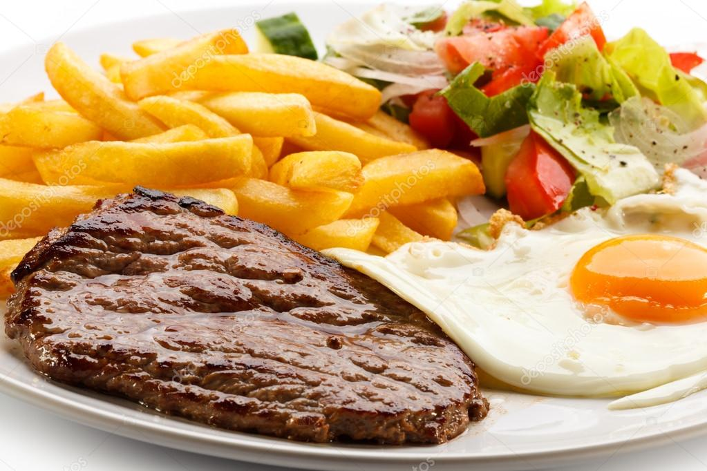

Norkys - Habich
Somos una polleria reconocida, estamos orientados a cumplir las expectativas de nuestros clientes en todo momento, con una alta variedad platos. Reconocido por su sabor, frescura y creatividad. Le damos el valor agregado a cada plato que servimos a mesa. Siendo nuestra propuesta gastronómica una fusión de comida marina, japonesa, oriental, no dejando a un lado las raíces de nuestra
Plato del mes: Anticuchos
DETALLES DEL RESTAURANTE
Horario de atención Lun - Dom: 12:00 - 23:00
Reservaciones 923476786
Tipo de cocina Brasas - Leña y Horno de barro, Carnes y Parrillas
Plato del mes Anticuchos
Reservaciones 923476786
Tipo de cocina Brasas - Leña y Horno de barro, Carnes y Parrillas
Plato del mes Anticuchos
ESPECIALIDADES



COMENTARIOS